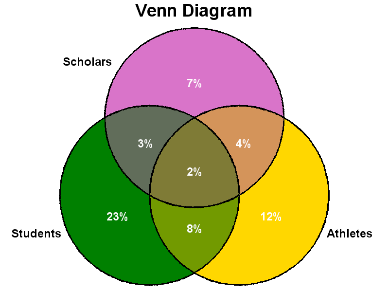

|
Version 1.1 (July 2011)
SAS macro %VennDiagram
3-Way Non-proportional Venn diagram
The SAS code presented on this page is largely inspired by
Rob Allison's SAS code for plotting a 3-way Venn diagram.
My contribution was to wrap his code into the macro presented below while refreshing it to make it more flexible and robust.
Main improvements to the existing code include more flexible data entry options.
Menu
Top Syntax
%VennDiagram(dsSrc, set1var, set2var, set3var, idvar=patkey, display=, count=, outfmt=8.0, OutName=VennDiagram, OutDir=c:\users\pbelisle\My Documents\Home\tmp, title=Venn Diagram, set1label=, set2label=, set3label=, set1HoverText=, set2HoverText=, set3HoverText=, set12HoverText=, set13HoverText=, set23HoverText=, set123HoverText=, fontSize=4, setlabelFontSize=4, imgFmt=gif, valuesColor=white, bgColor=white, undef=0);
Top %VennDiagram arguments list
Top Example
We illustrate the use of %VennDiagram through two examples. First, we reproduce the example presented on Rob's code; we first define the data set with all information necessary for the plot, and then call %VennDiagram.
data Example;
input Scholars Students Athletes p; cards; 1 0 0 0.07 0 1 0 0.23 0 0 1 0.12 1 1 0 0.03 0 1 1 0.08 1 0 1 0.04 1 1 1 0.02 ; run; %VennDiagram(Example, Scholars, Students, Athletes, display=p, outfmt=percent8.0); Note the use of outfmt option to make sure that the values will be displayed as percentages. Image produced is:  In a second example, we use a data set consisting of cell counts, where value in variable count is the number of patients that tested positive to each of three diagnostic tests: data TestResults; input Test1 Test2 Test3 Count; cards; 1 0 0 721 0 1 0 820 0 0 1 390 1 1 0 239 1 0 1 372 0 1 1 200 1 1 1 24 ; run; %VennDiagram(TestResults, Test1, Test2, Test3, count=Count, set1label=Test 1 Pos, set2label=Test 2 Pos, set3label=Test 3 Pos); Image produced is: Note the text displayed when the mouse was hovering over the intersection of Test 2 Pos and Test 3 Pos sets. Top Code
%macro VennDiagram(dsSrc, set1var, set2var, set3var, idvar=patkey, display=, count=, outfmt=8.0, OutName=VennDiagram, OutDir=c:\users\patrick.belisle\My Documents\Home\tmp, title=Venn Diagram,
set1label=, set2label=, set3label=, set1HoverText=, set2HoverText=, set3HoverText=, set12HoverText=, set13HoverText=, set23HoverText=, set123HoverText=, fontSize=4, setlabelFontSize=4, imgFmt=gif, valuesColor=white, bgColor=white, undef=0); %local dsCentroids dsColors dsMyData dsMyMap dsOutsideAnno dsSliceAnno dsTmp; %local color1 color2 color3 color12 color13 color23 color123; %local value1 value2 value3 value12 value13 value23 value123; filename odsout "&OutDir"; goptions reset=global; %if %length(%superq(display)) %then %do; proc sql noprint; select &display into :value1 from &dsSrc where &set1var eq 1 and &set2var eq 0 and &set3var eq 0; quit; proc sql noprint; select &display into :value2 from &dsSrc where &set1var eq 0 and &set2var eq 1 and &set3var eq 0; quit; proc sql noprint; select &display into :value3 from &dsSrc where &set1var eq 0 and &set2var eq 0 and &set3var eq 1; quit; proc sql noprint; select &display into :value12 from &dsSrc where &set1var eq 1 and &set2var eq 1 and &set3var eq 0; quit; proc sql noprint; select &display into :value13 from &dsSrc where &set1var eq 1 and &set2var eq 0 and &set3var eq 1; quit; proc sql noprint; select &display into :value23 from &dsSrc where &set1var eq 0 and &set2var eq 1 and &set3var eq 1; quit; proc sql noprint; select &display into :value123 from &dsSrc where &set1var eq 1 and &set2var eq 1 and &set3var eq 1; quit; %end; %else %if %length(%superq(count)) %then %do; %let dsTmp = %VennDiagramNewDatasetName(tmp); proc sql; create table &dsTmp as select &set1var, &set2var, &set3var, sum(&count) as Count from &dsSrc group &set1var, &set2var, &set3var; quit; proc sql noprint; select Count into :value1 from &dsTmp where &set1var eq 1 and &set2var eq 0 and &set3var eq 0; quit; proc sql noprint; select Count into :value2 from &dsTmp where &set1var eq 0 and &set2var eq 1 and &set3var eq 0; quit; proc sql noprint; select Count into :value3 from &dsTmp where &set1var eq 0 and &set2var eq 0 and &set3var eq 1; quit; proc sql noprint; select Count into :value12 from &dsTmp where &set1var eq 1 and &set2var eq 1 and &set3var eq 0; quit; proc sql noprint; select Count into :value13 from &dsTmp where &set1var eq 1 and &set2var eq 0 and &set3var eq 1; quit; proc sql noprint; select Count into :value23 from &dsTmp where &set1var eq 0 and &set2var eq 1 and &set3var eq 1; quit; proc sql noprint; select Count into :value123 from &dsTmp where &set1var eq 1 and &set2var eq 1 and &set3var eq 1; quit; proc datasets nolist; delete &dsTmp; quit; %end; %else %do; %let dsTmp = %VennDiagramNewDatasetName(tmp); proc sql; create table &dsTmp as select &set1var, &set2var, &set3var, N(&idvar) as Count from &dsSrc group &set1var, &set2var, &set3var; quit; proc sql noprint; select Count into :value1 from &dsTmp where &set1var eq 1 and &set2var eq 0 and &set3var eq 0; quit; proc sql noprint; select Count into :value2 from &dsTmp where &set1var eq 0 and &set2var eq 1 and &set3var eq 0; quit; proc sql noprint; select Count into :value3 from &dsTmp where &set1var eq 0 and &set2var eq 0 and &set3var eq 1; quit; proc sql noprint; select Count into :value12 from &dsTmp where &set1var eq 1 and &set2var eq 1 and &set3var eq 0; quit; proc sql noprint; select Count into :value13 from &dsTmp where &set1var eq 1 and &set2var eq 0 and &set3var eq 1; quit; proc sql noprint; select Count into :value23 from &dsTmp where &set1var eq 0 and &set2var eq 1 and &set3var eq 1; quit; proc sql noprint; select Count into :value123 from &dsTmp where &set1var eq 1 and &set2var eq 1 and &set3var eq 1; quit; proc datasets nolist; delete &dsTmp; quit; %end; %if %length(&undef) %then %do; %if %length(&value1) eq 0 %then %let value1 = &undef; %if %length(&value2) eq 0 %then %let value2 = &undef; %if %length(&value3) eq 0 %then %let value3 = &undef; %if %length(&value12) eq 0 %then %let value12 = &undef; %if %length(&value13) eq 0 %then %let value13 = &undef; %if %length(&value23) eq 0 %then %let value23 = &undef; %if %length(&value123) eq 0 %then %let value123 = &undef; %end; /* Sets colors definitions */ %let color1=cxD974C9; %let color2=cx008000; %let color3=cxFFD700; /* Original colors %let color1=cx5A5AE7; %let color2=cxE75A5A; %let color3=cx5AE75A; */ /* Calculate the 'overlapping' colors. This isn't true color-blending, but rather taking the average of the rgb hex codes. (using this algorithm, if you mix blue & yellow you do not get green like you would in true color mixing) Maybe someone who knows color mixing algorithms can replace this code with something better... */ %let dsColors = %VennDiagramNewDatasetName(colors); data &dsColors; %VennDiagramMixedColors(color12, &color1 &color2); /* Calculate color for 1&2 intersection */ %VennDiagramMixedColors(color13, &color1 &color3); /* Calculate color for 1&3 intersection */ %VennDiagramMixedColors(color23, &color2 &color3); /* Calculate color for 2&3 intersection */ %VennDiagramMixedColors(color123, &color1 &color2 &color3); /* Calculate color for 1&2&3 intersection */ run; /* Store mixed colors codes in macro variables */ proc sql noprint; select color12, color13, color23, color123 into :color12, :color13, :color23, :color123 from &dsColors; quit; proc datasets nolist; delete &dsColors; quit; /* ------------------------------------------------------------------ Create the "response" data set */ %if %length(%superq(set1label)) eq 0 %then %let set1label=&set1var; %if %length(%superq(set2label)) eq 0 %then %let set2label=&set2var; %if %length(%superq(set3label)) eq 0 %then %let set3label=&set3var; %let dsMyData = %VennDiagramNewDatasetName(mydata); data &dsMyData; length AreaLabel $200; AreaID = 1; %if %length(&value1) %then %do; value = put(&value1, &outfmt); %end; %else %do; value = ""; %end; %if %length(%superq(set1HoverText)) = 0 %then %do; AreaLabel = "&set1label Only"; %end; %else %do; AreaLabel = "&set1HoverText"; %end; output; AreaID = 2; %if %length(&value2) %then %do; value = put(&value2, &outfmt); %end; %else %do; value = ""; %end; %if %length(%superq(set2HoverText)) = 0 %then %do; AreaLabel = "&set2label Only"; %end; %else %do; AreaLabel = "&set2HoverText"; %end; output; AreaID = 3; %if %length(&value3) %then %do; value = put(&value3, &outfmt); %end; %else %do; value = ""; %end; %if %length(%superq(set3HoverText)) = 0 %then %do; AreaLabel = "&set3label Only"; %end; %else %do; AreaLabel = "&set3HoverText"; %end; output; AreaID = 12; %if %length(&value12) %then %do; value = put(&value12, &outfmt); %end; %else %do; value = ""; %end; %if %length(%superq(set12HoverText)) = 0 %then %do; AreaLabel = "&set1label & &set2label Intersect"; %end; %else %do; AreaLabel = "&set12HoverText"; %end; output; AreaID = 23; %if %length(&value23) %then %do; value = put(&value23, &outfmt); %end; %else %do; value = ""; %end; %if %length(%superq(set23HoverText)) = 0 %then %do; AreaLabel = "&set2label & &set3label Intersect"; %end; %else %do; AreaLabel = "&set23HoverText"; %end; output; AreaID = 13; %if %length(&value13) %then %do; value = put(&value13, &outfmt); %end; %else %do; value = ""; %end; %if %length(%superq(set13HoverText)) = 0 %then %do; AreaLabel = "&set1label & &set3label Intersect"; %end; %else %do; AreaLabel = "&set13HoverText"; %end; output; AreaID = 123; %if %length(&value123) %then %do; value = put(&value123, &outfmt); %end; %else %do; value = ""; %end; %if %length(%superq(set123HoverText)) = 0 %then %do; AreaLabel = "&set1label & &set2label & &set3label Intersect"; %end; %else %do; AreaLabel = "&set123HoverText"; %end; output; run; data &dsMyData; set &dsMyData; length htmlvar $500; htmlvar='title='||quote( 'AREA: '|| strip(AreaLabel) ||'0D'x|| 'VALUE: '|| strip(value)); run; /* ----------------------------------------------------------------- Create the "map" geometry data set */ %let dsMyMap = %VennDiagramNewDatasetName(mymap); data &dsMyMap; radius = 25; /* ----- Area 1 (top-most, area 1 only) ----- */ AreaID = 1; %VennDiagramDegreesLoop(0, 180, 1, 50, 25+10+21.650635); /* top arc of area 1 */ %VennDiagramDegreesLoop(120, 60, -1, 50-(50/4), 25+10); /* bottom/left arc of area 1 */ %VennDiagramDegreesLoop(120, 60, -1, 50+(50/4), 25+10); /* bottom/right arc of area 1 */ /* ----- Area 2 (Left-most, area 2 only) ----- */ AreaID = 2; %VennDiagramDegreesLoop(300, 120, -1, 50-(50/4), 25+10); /* big/left arc of area 2 */ %VennDiagramDegreesLoop(180, 240, 1, 50, 25+10+21.650635); /* little/right/top arc of area 2 */ %VennDiagramDegreesLoop(180, 240, 1, 50+(50/4), 25+10); /* little/right/bottom arc of area 2 */ /* ----- Area 3 (Right-most, area 3 only) ----- */ AreaID = 3; %VennDiagramDegreesLoop(60, -120, -1, 50+(50/4), 25+10); /* big/right arc of area 3 */ %VennDiagramDegreesLoop(-60, 0, 1, 50-(50/4), 25+10); /* little/left lower arc of area 3 */ %VennDiagramDegreesLoop(-60, 0, 1, 50, 25+10+21.650635); /* little/left/top arc of area 3 */ /* ----- Area 1&2 Intersection ----- */ AreaID = 12; %VennDiagramDegreesLoop(180, 240, 1, 50, 25+10+21.650635); /* lower/left arc */ %VennDiagramDegreesLoop(180, 120, -1, 50+(50/4), 25+10); /* lower/right arc */ %VennDiagramDegreesLoop(60, 120, 1, 50-(50/4), 25+10); /* topmost arc */ /* ----- Area 2&3 Intersection ----- */ AreaID = 23; %VennDiagramDegreesLoop(180, 240, 1, 50+(50/4), 25+10); /* lower/left arc */ %VennDiagramDegreesLoop(-60, 0, 1, 50-(50/4), 25+10); /* lower/right arc */ %VennDiagramDegreesLoop(300, 240, -1, 50, 25+10+21.650635); /* topmost arc */ /* ----- Area 1&3 Intersection ----- */ AreaID = 13; %VennDiagramDegreesLoop(60, 120, 1, 50+(50/4), 25+10); /* topmost arc */ %VennDiagramDegreesLoop(60, 0, -1, 50-(50/4), 25+10); /* lower/left arc */ %VennDiagramDegreesLoop(300, 360, 1, 50, 25+10+21.650635); /* lower/right arc */ /* ----- Area 1&2&3 Intersection (center) ----- */ AreaID = 123; %VennDiagramDegreesLoop(0, 60, 1, 50-(50/4), 25+10); /* upper/right arc */ %VennDiagramDegreesLoop(120, 180, 1, 50+(50/4), 25+10); /* upper/left arc */ %VennDiagramDegreesLoop(240, 300, 1, 50, 25+10+21.650635); /* lower/bottom arc */ run; %let dsCentroids = %VennDiagramNewDatasetName(centroids); %let dsTmp = %VennDiagramNewDatasetName(tmp); /* Put the labels on the pieces of the circles */ proc sql; /* Get the average x/y center coordinates of each piece */ create table &dsCentroids as select unique AreaID, mean(x) as x, mean(y) as y from &dsMyMap group by AreaID; /* Merge the centers with the 'response' data */ create table &dsTmp as select unique d.*, c.x, c.y from &dsMyData as d left join &dsCentroids as c on d.AreaID = c.AreaID; quit; proc datasets nolist; delete &dsMyData; change &dsTmp=&dsMyData; quit; %let dsSliceAnno = %VennDiagramNewDatasetName(sliceanno); proc sql; create table &dsSliceAnno as select *, '2' as xsys,'2' as ysys, '3' as hsys, 'A' as when, 'label' as function length=12, '5' as position, '"arial/bo"' as style length=12, &fontSize as size, "&valuesColor" as color length=12, strip(value) as text length=20 from &dsMyData; quit; %let dsOutsideAnno = %VennDiagramNewDatasetName(outsideanno); /* Put labels beside (outside) the circles */ /* Generate a version with labels instead of hatch-marks and 'legend' */ data &dsOutsideAnno; length text $100 style $12 function $12 color $12; xsys = '2'; ysys = '2'; hsys = '3'; when = 'A'; function = 'label'; style = '"arial/bo"'; size = &setlabelFontSize; color = 'black'; text = "&set1label"; position='4'; x = 27; y = 73; output; text = "&set2label"; position='4'; x = 13; y = 25; output; text = "&set3label"; position='6'; x = 87; y = 25; output; run; ods listing close; ods html path=odsout body="&OutName..html" (title="SAS/Graph Venn Diagram") style=minimal; goptions border; goptions htitle=6pct htext=4pct ftitle="arial/bo" ftext="arial"; goptions cback=&bgColor; title "&title"; /* Use the 'midpoints=' gmap option to guarantee the colors will be assigned in the desired order (otherwise they will be assigned alphabetically by &labeln values. */ pattern1 v=s c=&color1; pattern2 v=s c=&color2; pattern3 v=s c=&color3; pattern4 v=s c=&color12; pattern5 v=s c=&color23; pattern6 v=s c=&color13; pattern7 v=s c=&color123; legend1 position=(bottom) across=3 label=none shape=bar(3,1); filename vdiagout "&OutDir/&OutName"; goptions device=&imgFmt gsfname=vdiagout; proc gmap map=&dsMyMap data=&dsMyData anno=&dsOutsideAnno all; id AreaID; choro AreaID / nolegend midpoints=1 2 3 12 23 13 123 coutline=black woutline=2 anno=&dsSliceAnno html=htmlvar des="" name="&OutName"; run; quit; ods html close; ods listing; filename vdiagout clear; proc datasets nolist; delete &dsCentroids &dsMyData &dsMyMap &dsOutsideAnno &dsSliceAnno; quit; %mend; %macro VennDiagramDegreesLoop(StartAngle, EndAngle, direction, CenterX, CenterY); do degrees = &StartAngle to &EndAngle by &direction; radians =degrees * (atan(1)/45); x = &CenterX + (radius * cos(radians)); y = &CenterY + (radius * sin(radians)); output; end; %mend; %macro VennDiagramMixedColors(outcolor, incolors, darken=0.9); %local nColors; %local color0 color1 color2; %let nColors = %eval(1 + %length(%sysfunc(compbl(&incolors))) - %length(%sysfunc(compress(&incolors)))); %let color0 = %scan(&incolors, 1); %let color1 = %scan(&incolors, 2); /* First get the rgb hex values of the colors to mix*/ red0 = input(substr("&color0", 3, 2), hex2.); green0 = input(substr("&color0", 5, 2), hex2.); blue0 = input(substr("&color0", 7, 2), hex2.); red1 = input(substr("&color1", 3, 2), hex2.); green1 = input(substr("&color1", 5, 2), hex2.); blue1 = input(substr("&color1", 7, 2), hex2.); %if &nColors eq 3 %then %do; %let color2 = %scan(&incolors, 3); red2 = input(substr("&color2", 3, 2), hex2.); green2 = input(substr("&color2", 5, 2), hex2.); blue2 = input(substr("&color2", 7, 2), hex2.); %end; %else %do; red2 = .; green2 = .; blue2 = .; %end; /* darken is a factor to 'darken' the combined area colors. values 0->1 (1=no darkening, 0=totally darkened) */ Dk = &darken**(&nColors-1); red = mean(of red0 red1 red2) * Dk; green = mean(of green0 green1 green2) * Dk; blue = mean(of blue0 blue1 blue2) * Dk; &outcolor = "cx"||put(red,hex2.)||put(green,hex2.)||put(blue,hex2.); %mend; %macro VennDiagramNewDatasetName(proposalname); %*Finds the first unused dataset named *datasetname*, adding a leading underscore and a numeric suffix as large as necessary to make it unique!; %local i newdatasetname; %let proposalname=%sysfunc(compress(&proposalname)); %let newdatasetname=_&proposalname; %do %while(%sysfunc(exist(&newdatasetname))); %let i = %eval(&i+1); %let newdatasetname=_&proposalname&i; %end; &newdatasetname %mend; Top More Venn Diagrams
If you'd rather plot proportional Venn diagrams, please refer to the SAS paper How To Generate 2, 3 and 4 Way Venn Diagrams with Drill Down Functionality within 4 minutes! Top Download
Download %VennDiagram 1.1 now. |